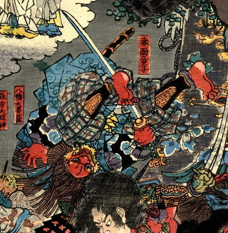

鬼；オニ

渡辺綱に投げ飛ばされた赤面童子。全身赤く、黄色いひげが生えている。武装し刀を持っている。
著作者：一寿斎国政（歌川国政）／出典：親書誌：U426_nichibunken_0231：四天王大江山入之圖；シテンノウオオエヤマノズ／日付：2010／資源識別子：U426_nichibunken_0231_0001_0000
Copyright (c)2010- International Research Center for Japanese Studies, Kyoto, Japan. All rights reserved.